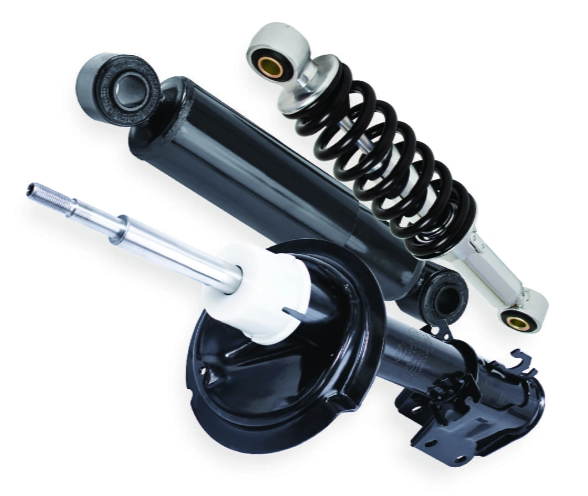
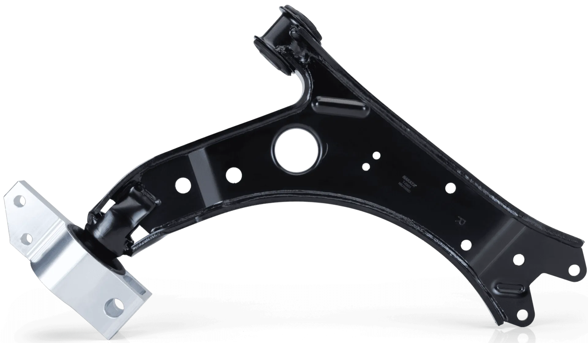
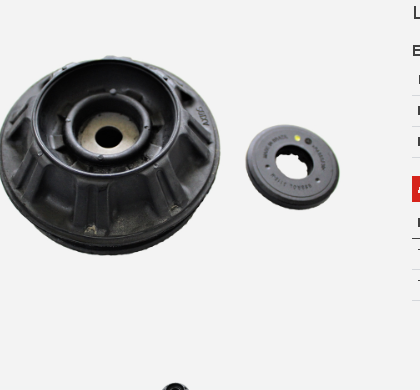
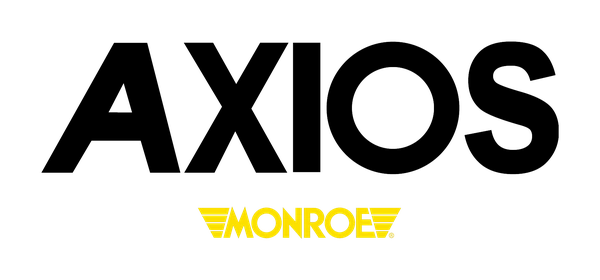
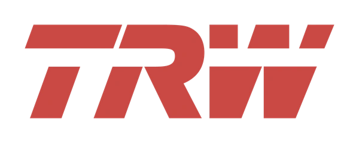

Mais estabilidade, controle e conforto para o seu veículo. Amortecedores, molas, bandejas, pivôs, bieletas, buchas, terminais e outros componentes para diferentes aplicações. Consulte a peça correta para seu veículo.
Os amortecedores controlam as oscilações das molas, mantendo os pneus em contato permanente com o solo para máxima aderência, estabilidade em curvas e eficiência de frenagem. Amortecedores pressurizados e kits de montagem.
Marcas Homologadas:COFAPNAKATAMONROE AXIOS
Linha Turbogás
Cofap

Amortecedor Cofap Turbogás GP33205
Amortecedor pressurizado a gás nitrogênio da linha Cofap Turbogás. Proporciona estabilidade contínua, resposta dinâmica rápida e eliminação do efeito de cavitação do óleo interno.
Fabricante:Cofap (Marelli Cofap)
Código / Linha:GP33205 | Turbogás
Posição:Dianteiro Esquerdo
Aplicação Oficial: Hyundai i30 2.0 16V (2009 a 2012). Consulte para seu veículo.
Amortecedor pressurizado a gás da linha HG (High Gas). Tecnologia que reduz a aeração do óleo e assegura controle dinâmico da carroceria em desníveis e pisos irregulares.
Fabricante:Nakata
Código / Linha:HG 41536 | Pressurizado HG
Posição:Eixo Traseiro
Aplicação Oficial: Peugeot Partner / Partner Rapid (2021 a 2025). Consulte para seu veículo.
Kit completo de proteção para amortecedor traseiro composto por coxim superior, batente de poliuretano e coifa flexível em Santoprene contra abrasão e contaminantes.
A recomendação técnica dos fabricantes é substituir sempre os amortecedores em pares para o mesmo eixo. Trocar apenas um lado gera desequilíbrio dinâmico de amortecimento, comprometendo o alinhamento e a frenagem de emergência.
A mola helicoidal sustenta o peso total da carroceria e carga do veículo, trabalhando em conjunto direto com o amortecedor para absorver irregularidades e definir a altura de rodagem e a geometria de suspensão.
Eixo Dianteiro
Molas Dianteiras
Suportam o peso do conjunto motriz (motor e câmbio). Molas fadigadas causam arriamento da frente, desgaste prematuro dos amortecedores e batidas secas de batente.
Molas helicoidais sofrem fadiga contínua do aço especial. Procedimentos como aquecimento ou corte comprometem a têmpera térmica e geram risco grave de quebra estrutural repentina.
Elementos essenciais para a articulação e guiamento das rodas. Garantem que as forças de aceleração, curva e frenagem sejam transmitidas com precisão milimétrica ao chassi.
Marcas Homologadas:NAKATACOFAPMONROE AXIOS
Braço Oscilante Dianteiro
Nakata

Bandeja de Suspensão Dianteira Nakata NBJ7014EP
Braço oscilante estampado com geometria de precisão, fornecido com buchas de borracha técnica vulcanizada para absorção de impactos e alinhamento milimétrico.
Fabricante:Nakata
Código Oficial:NBJ7014EP
Posição:Dianteiro Esquerdo (com bucha)
Aplicação Oficial: Honda Civic Geração 10 (2016 a 2021). Consulte para seu veículo.
Junta esférica com pino forjado em aço especial e vedação hermética em elastômero resistente a graxa, permitindo articulação angular suave sem folgas na manga de eixo.
Fabricante:Nakata
Código Oficial:N 99443
Posição:Dianteiro Direito / Esquerdo
Aplicação Oficial: Honda Civic Geração 10 (2016 a 2021). Consulte para seu veículo.
Haste articulada que transmite as forças de rolagem da carroceria para a barra estabilizadora, controlando a inclinação em curvas com resposta rápida e estável.
Fabricante:Nakata
Código Oficial:N 92104
Posição:Dianteiro Direito / Esquerdo
Aplicação Oficial: Ford Bronco Sport (2021-2025), Maverick (2022-2025), Mustang Mach-E (2021-2025).
Componentes em borracha técnica e poliuretano que isolam a cabine das vibrações da pista, sustentam colunas de suspensão e protegem as hastes dos amortecedores contra contaminação externa.
Marcas Líderes:MONROE AXIOSNAKATASAMPEL
Com Rolamento
Monroe Axios

Coxim do Amortecedor Monroe Axios LT90111
Coxim superior dianteiro fornecido com rolamento integrado para esterçamento suave da coluna, eliminando ruídos e estalos no volante.
Código:LT90111
Posição:Dianteiro D / E
Aplicação: Toyota Etios (2012-2021), Yaris Hatch/Sedan (2018-2026).
Permitem que toda a coluna de suspensão esterce suavemente com a direção. Rolamentos travados deixam a direção pesada, ruidosa e causam retorno irregular do volante.
Suspensão e direção trabalham em sinergia constante. Sintomas como volante com folga, vibrações ou desgaste irregular dos pneus exigem a inspeção conjunta de terminais e barras axiais.
Marcas:TRWNAKATA
Terminais de Direção
Ligam a barra axial à manga de eixo. Ajustam a convergência e divergência das rodas. Folgas causam instabilidade em linha reta e desgaste rápido nas bordas dos pneus.
A suspensão não serve apenas para deixar o carro confortável
A suspensão influencia diretamente o contato permanente dos pneus com o solo, a estabilidade nas curvas, o espaço de frenagem e a segurança ativa de todos os ocupantes.
Estabilidade
Ajuda o veículo a manter comportamento previsível e firme durante curvas, mudanças repentinas de faixa e frenagens bruscas.
Contato com o Solo
O conjunto trabalha continuamente para evitar que o pneu perca contato com a pista ao passar por ondulações e desníveis do asfalto.
Conforto a Bordo
Filtra e absorve os impactos das vias em conjunto com molas, amortecedores e buchas, reduzindo ruídos e cansaço ao dirigir.
Controle Direcional
Um sistema desgastado altera os ângulos geométricos, fazendo o carro responder com atraso ao comando do volante.
Diagnóstico Preventivo
Como saber se o amortecedor precisa ser substituído?
O desgaste dos amortecedores é gradual. O motorista muitas vezes se acostuma com a perda de eficiência sem perceber o perigo. Fique atento a estes indícios que justificam inspeção física imediata:
●
Vazamento de Óleo Aparente:
Fluido viscoso escorrendo pela carcaça do amortecedor indica rompimento do retentor.
●
Oscilação Excessiva (Carro Quicando):
O veículo continua balançando para cima e para baixo várias vezes após passar por lombadas.
●
Mergulho Acentuado da Frente:
Ao frear bruscamente, a frente afunda excessivamente, levantando a traseira e aumentando a distância de parada.
●
Inclinação Exagerada em Curvas:
A carroceria rola excessivamente nas curvas, transmitindo sensação de insegurança e instabilidade.
●
Desgaste Irregular em Escamas nos Pneus:
Banda de rodagem com calombos alternados por perda de contato da roda com o solo.
●
Ruídos de Fim de Curso:
Pancadas secas ao passar por pequenos buracos causadas pelo esgotamento da carga do amortecedor.
Nota Técnica: Nenhum desses sinais isoladamente confirma o defeito sem teste em elevador automotivo. São sinais que justificam uma inspeção completa do sistema por mecânico qualificado.
Critério Real de Manutenção
De quanto em quanto tempo devo revisar a suspensão?
Não existe uma quilometragem fixa universal para a troca de componentes de suspensão. A necessidade de manutenção preventiva e substituição depende de múltiplas variáveis operacionais:
Qualidade do PavimentoBuracos, asfalto rugoso e lombadas aceleram o desgaste
Peso & Carga TransportadaTrabalho com passageiros ou carga contínua fadiga as molas
Estilo de ConduçãoPassagem rápida por desníveis deforma buchas e pivôs
Tempo e IntempériesBorrachas de buchas e coifas ressecam com poeira e tempo
O manual do veículo e a inspeção física detalhada em oficina devem sempre prevalecer. Faixas de quilometragem divulgadas no mercado servem exclusivamente como orientação de verificação.
Quilometragem é referência de manutenção. A condição real da peça é o que determina a necessidade de substituição.
Topografia Serrana
Seu veículo roda em condições severas?
Em cidades montanhosas como Nova Friburgo e toda a Região Serrana do RJ, o sistema de suspensão opera sob severidade mecânica constante:
Topografia Acidentada e Ladeiras:
Esforços torsionais intensos sobre pivôs, buchas e bandejas em aclives e declives acentuados.
Pavimento com Paralelepípedos e Buracos:
Vibrações de alta frequência que aceleram o afrouxamento de bieletas e o desgaste de coxins.
Uso Comercial, Carga e Transporte por App:
Exige inspeções preventivas regulares a cada 10.000 km para prevenir paradas inesperadas.
Quanto mais severas as condições de uso, maior a importância de inspeções regulares.
Geometria e Desgaste
Suspensão e desgaste dos pneus estão relacionados
Alterações em amortecedores, buchas, bandejas e pivôs desviam os ângulos de câmber e convergência da roda. Como consequência, o pneu não assenta de forma homogênea no asfalto, desgastando apenas as bordas internas ou externas e encurtando sua durabilidade pela metade.
Determinados serviços alteram a posição dos eixos e ângulos de direção. Dependendo do serviço realizado (como troca de amortecedores, bandejas, pivôs ou terminais), o veículo necessita de inspeção de geometria, alinhamento computadorizado e conferência de torque conforme especificações do fabricante.
Importante:
O alinhamento garante que as peças novas durem o tempo esperado e o carro mantenha estabilidade em alta velocidade.
Sintomas Comuns
Seu carro está dando sinais?
A suspensão emite avisos perceptíveis antes de romper completamente. Fique atento a estes 10 sintomas no dia a dia:
🚨
Batidas Secas
Pancadas ao passar por irregularidades indicam batente estourado ou amortecedor sem ação.
🚨
Rangidos ou Estalos
Sons metálicos ao esterçar o volante sugerem folga em pivô, terminal ou coxim superior.
🚨
Carro Quicando Demais
Oscilação contínua após ondulações aponta amortecedores sem pressão hidráulica.
🚨
Inclinação Excessiva
Carro rola em demasia nas curvas, sintoma comum de bieleta quebrada ou barra estabilizadora solta.
🚨
Desgaste Irregular de Pneus
Pneu desgastando apenas de um lado ou com ondulações indica folga na suspensão.
🚨
Direção com Comportamento Estranho
Volante impreciso, duro ou com atraso de resposta ao comando.
🚨
Folgas nas Rodas
Sensação de roda solta ou jogo lateral perceptível em testes de rampa.
🚨
Veículo Puxando
Carro puxa involuntariamente para a esquerda ou direita em linha reta.
🚨
Vazamento no Amortecedor
Manchas de óleo na carcaça do amortecedor comprovam rompimento de vedação.
🚨
Altura Desnivelada
Um lado do veículo visivelmente mais baixo indica mola cansada ou quebrada.
Mensagem de Segurança Tucano Auto Peças
Nem todo sintoma identifica sozinho a peça defeituosa. A inspeção correta é fundamental. Evite diagnósticos precipitados; passe em uma oficina de confiança para medição técnica e teste de folga em elevador.
Prevenção Responsável
O que pode acontecer quando a suspensão é ignorada?
Desgaste Prematuro dos Pneus
Pneus caros podem ser inutilizados em poucos milhares de quilômetros por desalinhamento provocado por buchas e pivôs com folga.
Perda de Estabilidade e Aderência
Aumenta o risco de derrapagens em curvas e de aquaplanagem sob chuva, já que o pneu não pressiona o asfalto com firmeza.
Aumento do Espaço de Frenagem
Amortecedores fadigados aumentam a distância de parada em até 20%, pois a roda perde o contato ideal com o solo nas frenagens.
Danos em Efeito Cascata
Um pivô estourado sobrecarrega a bandeja; uma mola cansada estraga o amortecedor novo; um coxim quebrado danifica a caixa de direção.
Revisão Completa
Checklist da Suspensão
Antes de fazer viagens ou na sua revisão preventiva regular, confira os 14 itens indispensáveis para manter o veículo seguro e firme na pista:
✓Amortecedores Dianteiros
✓Amortecedores Traseiros
✓Molas Helicoidais
✓Coxins Superiores
✓Rolamentos de Coluna
✓Batentes de Poliuretano
✓Coifas Protetoras
✓Bandejas de Suspensão
✓Buchas de Borracha
✓Pivôs de Suspensão
✓Bieletas da Barra
✓Terminais de Direção
✓Barras Axiais
✓Geometria e Alinhamento
Quer verificar uma dessas peças?
Envie os dados do seu veículo para nossa equipe especializada verificar a compatibilidade exata de catálogo.
Trabalhamos com marcas tradicionais do mercado de reposição e fornecedores de montadoras para garantir durabilidade, ajuste milimétrico e estabilidade na condução.
CofapAmortecedores & Molas
NakataBandejas, Pivôs & Bieletas

Monroe / AxiosAmortecedores & Borrachas
SampelBuchas, Coxins & Kits

TRWPivôs & Articulações
Evite Peça Incompatível
Para consultar a aplicação, tenha estas informações em mãos
A suspensão varia com frequência entre diferentes versões, anos e motores do mesmo modelo. Tenha em mãos:
1. VeículoMarca, modelo e versão
2. Ano & MotorAno de fabricação/modelo e cilindrada
3. PosiçãoDianteira ou traseira / lado esquerdo ou direito
4. Chassi / CódigoNúmero do chassi ou referência da peça antiga
Essas informações ajudam a encontrar a aplicação correta e evitar a compra da peça errada.
Respostas técnicas, objetivas e transparentes para as principais questões sobre manutenção da suspensão.
De quanto em quanto tempo devo revisar a suspensão?
Recomenda-se realizar uma inspeção preventiva a cada 10.000 km a 15.000 km ou sempre que fizer o alinhamento e balanceamento das rodas. Em regiões com pavimento irregular ou uso severo (como a topografia serrana de Nova Friburgo), as vistorias visuais de folgas e vazamentos devem ser antecipadas.
Existe uma quilometragem fixa para trocar amortecedores?
Não existe quilometragem universal rígida. A vida útil dos amortecedores varia drasticamente com o tipo de piso, carga transportada e condução. O hodômetro serve apenas como marco para vistorias periódicas; a troca é determinada pelo teste de eficiência e constatação de vazamentos ou fadiga física.
Como saber se o amortecedor está ruim?
Sinais como vazamento evidente de fluido hidráulico no corpo do amortecedor, balanço contínuo da carroceria após lombadas (veículo quicando), mergulho acentuado da frente em frenagens e desgaste irregular dos pneus em escamas justificam avaliação imediata.
Um amortecedor vazando precisa ser trocado?
Sim. Vazamento de óleo pela haste indica que o retentor principal rompeu. Com a perda do fluido interno, o amortecedor perde a capacidade de conter as oscilações da mola, comprometendo a frenagem e a aderência dos pneus ao solo.
Quando devo trocar as molas?
As molas devem ser substituídas quando apresentarem perda de altura da carroceria (veículo arriado), batidas de fim de curso frequentes, marcas de elos batendo entre si, trincas ou ferrugem profunda, além de ser recomendada a troca preventiva em substituições de amortecedores de alta quilometragem.
Qual a função da bandeja?
A bandeja (braço oscilante) é o elemento estrutural que conecta o cubo da roda ao subchassi da carroceria. Ela posiciona a roda na geometria correta e suporta esforços laterais e longitudinais em acelerações, curvas e frenagens através de suas buchas e pivô.
Qual a função do pivô?
O pivô de suspensão é uma junta esférica que permite a articulação angular da manga de eixo em relação à bandeja. Ele possibilita que a roda esterce para a direção e se movimente verticalmente com a suspensão ao mesmo tempo.
Para que serve a bieleta?
A bieleta é uma haste articulada com pivôs ou buchas que conecta a barra estabilizadora à coluna de suspensão ou à bandeja, transmitindo as forças que controlam a inclinação lateral (rolagem) da carroceria em curvas.
Quando devo trocar as buchas?
As buchas de borracha devem ser substituídas quando apresentarem ressecamento acentuado, trincas, rasgos, folgas radiais perceptíveis na alavanca ou folgas que causem estalos metálicos e perda de alinhamento direcional.
É necessário trocar amortecedores aos pares?
Sim. A recomendação técnica dos fabricantes é substituir sempre os amortecedores em pares para o mesmo eixo (dianteiro ou traseiro). Trocar apenas um lado gera desequilíbrio dinâmico de amortecimento, prejudicando a estabilidade em curvas e frenagens.
Depois de trocar peças da suspensão preciso fazer alinhamento?
Na grande maioria dos casos, sim. Serviços que envolvem amortecedores, bandejas, pivôs, buchas e terminais de direção alteram os ângulos de cáster, câmber e convergência da geometria veicular, exigindo conferência e alinhamento profissional.
Desgaste irregular dos pneus pode ter relação com a suspensão?
Sim, diretamente. Folgas em buchas e pivôs, bandejas empenadas ou amortecedores sem pressão alteram o contato plano do pneu com a pista, gerando desgaste concentrado nas bordas internas, externas ou escamação na banda de rodagem.
O carro está fazendo barulho. Pode ser a suspensão?
Pode ser, mas uma inspeção profissional é indispensável para confirmar a causa. Barulhos secos em desníveis costumam envolver bieletas, buchas ou coxins, mas problemas na caixa de direção, freios ou escapamento podem produzir ruídos semelhantes.
Serviços de suspensão e direção devem ser realizados por profissional qualificado, seguindo as especificações do fabricante do veículo e os procedimentos adequados de montagem.